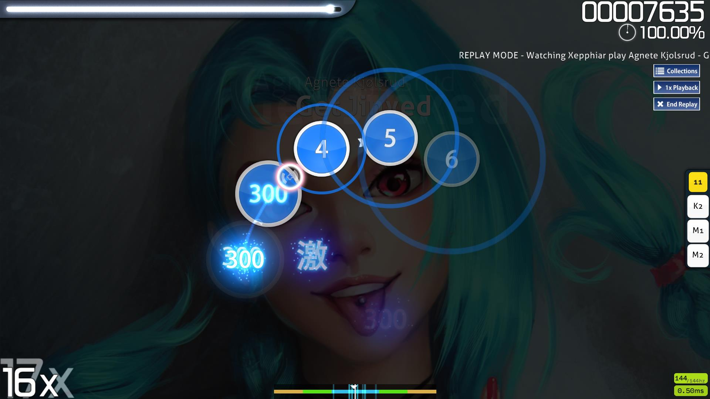

osu! - Wikipedia
osu! is a freeware rhythm game developed by Dean "peppy" Herbert, originally for Microsoft Windows. The game has also been ported to macOS, iOS, Android, ...
Gameplay
Each note has an approach circle. When the approach circle reaches the outer edge of the note, you press the mouse button. There are also sliders and spinners. Timing is key.
Beatmaps (songs) are classified by difficulty, from easiest to hardest: Easy, Normal, Hard, Insane, Expert, and Expert Plus.
Music
Music is what makes osu! "cross cultural."
Community
There are community forums where all sorts of people have all sorts of discussions.
There are both official and community hosted tournaments. Tournaments are often broadcasted on Twitch.